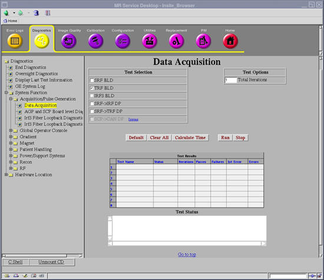
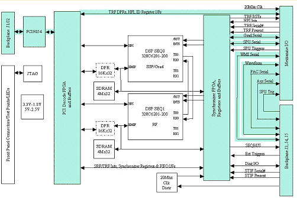
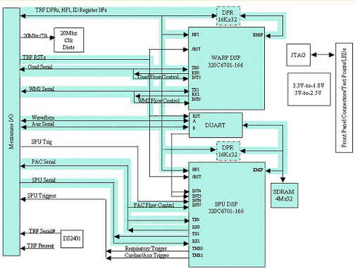
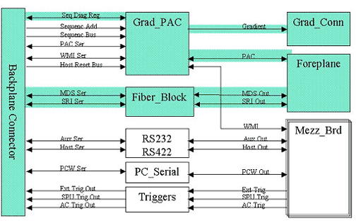

Operating Documentation
Direction 5670000, Rev# 1
Optima MR450w 1.5T Service Methods
Module Version 3.0, Version Date 8/19/08
Operating Documentation |
Diagnostics >> System Function >> Acquisition / Pulse Generation >> Data Acquisition
Diagnostics >> Hardware Location >> PGR Cabinet >> CAM >> Data Acquisition
Illustration 1: TRF BLD

The Trigger and Rotation Functionality (TRF) Board Level Diagnostic (BLD) performs the tests listed below.
This board relies heavily on the functionality of the SRF and STIF to perform these tests. Patterns used to validate the memory are selectable and are listed below. The items highlighted in green in the following block diagrams show what has been tested.
None
Illustration 2: SRF for TRF Block Diagram

Illustration 3: TRF Block Diagram

Illustration 4: STIF Board Level Diagnostics Block Diagram

Short vs. Long Tests: The short test performs a walking ones and walking zeroes pattern whereas the long test will perform a walking ones, walking zeroes, 0xaaaa, 0x5555, and possibly other patterns. As a result, selecting the long test will generally provide a longer and more exhaustive test. If the problem is highly intermittent then it may be desirable to run a long test.
Click [Calculate Time] to get an estimate of the time it will take to run the selected diagnostics.
0.TRF serial number verify tests
Registers Initial State Verification
Registers Write Verification
Status Check Tests
PCI to DPR Memory Tests
DPR Semaphore Tests
Semaphore Registers Verification
HPI Data Bus Verification
HPI Functional Verification
HPI to C6X Internal Program Memory Tests
HPI to C6X Internal Data Memory Tests
HPI to DPR Memory Tests
HPI to C6X External SSRAM Memory Tests
C6X Self Tests
Duart Tests
C6X to AGP HPI Interrupt Tests
AGP to C6X HPI Interrupt Tests
McBSP WARP Serial Loopback Test
McBSP SPU Serial Loopback Test
McBSP SPU Serial Loopback Test
Warp External WMI Loop Test
SPU External Loop Test
SPU Trigger Internal Test
SPU External Loop Test
Memory Pattern
0 MINIMUM or Power Up = 0's, F's, and an Address Test (Incrementing values)
1 Short = 0's, F's, A's, 5's and an address test.
2 Medium = 0's, F's, A's, 5's, walking one's, and an address test.
3 Long = 0's, F's, A's, 5's, walking one's, walking 0's, and an address test.
Output values are judged pass or fail. In the event of failure, the details of the failure can be found in the GE System Log.
Although, in the case of errors you can click the 1st Error number to see the nature of the error, it is recommended that you view the GE System Log to view all the errors that were recorded.
| NOTE: | The Test Options settings should not be changed from their default settings unless instructed to do so by a GE Healthcare engineer. There are very few circumstances when these settings ever need to be changed. |
| ||||
| Prior to scanning, a TPS reset is required. | ||||